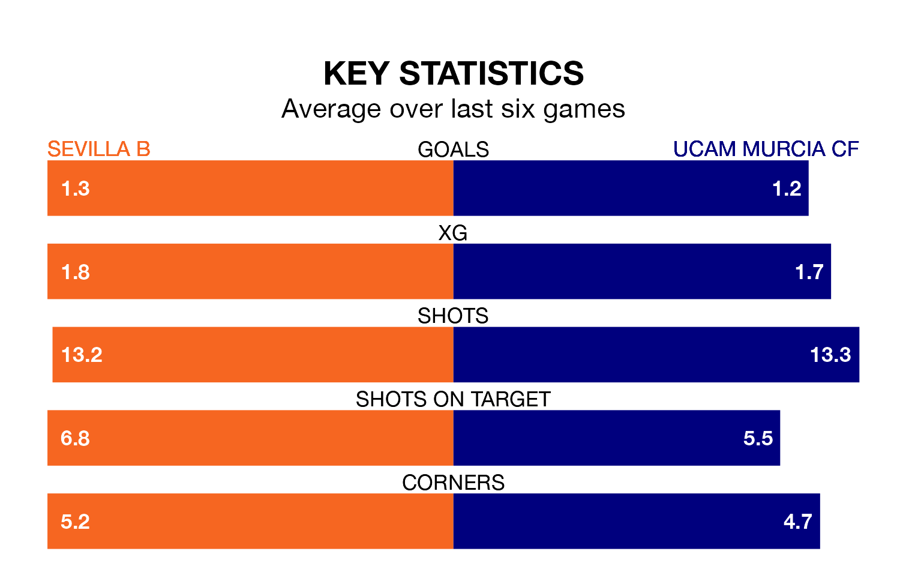

Sevilla B host UCAM Murcia CF on Sunday at the Estadio Viejo Nervión in the Segunda División RFEF Group 4.
In their last league match, on April 21, Sevilla B beat Vélez 1-0 away, with their goal scored by Ibrahima Sow.
UCAM Murcia also won, 2-0 at home against CD San Roque de Lepe, with Fabián Urzain Egido and Jorge Luis García Salmón on the scoresheet.
With 50 goals in 32 games so far this season, Sevilla B are the league's highest scorers with 1.6 goals per game. And they are conceding fewer than average, letting in 18 goals at a rate of 0.6 per game.
UCAM Murcia, meanwhile, are average scorers, with 1.0 goal per game. They have also conceded 1.0 goal per game.
The home team are top of the table after 32 games, of which they have won 18 and drawn 10, earning 64 points.
The visitors are seven places behind Sevilla B in eighth, with 12 wins and eight draws putting them on 44 points.
In the last 10 years, Sevilla B and UCAM Murcia have played each other on 16 occasions. Sevilla B won five of them, UCAM Murcia seven, and they drew four times.
On average, Sevilla B scored 0.9 goals and UCAM Murcia 1.0 in those matches.
Their last meeting was on December 17, when they played out a 0-0 draw.
Sevilla B are in good form in the Segunda División RFEF Group 4, with four wins and a draw from their last six games.
With three wins and a draw over that period, UCAM Murcia's form is worse – they have taken 10 points from 18, compared to the hosts' 13.
Updated: 07:59 (UTC), 26/04/24